)
FIGURE 14.5 Confidence intervals for predictions from regression models.
| Previous | Table of Contents | Next |
The purpose of developing regression usually is to predict the value of the response variable for those values of predictor variables that have not been measured. Given the regression equation, it is easy to predict the response 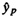 for any given value of predictor variable xp:
| 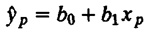 | (14.3) |
This formula gives only the mean value of the predicted response based upon the sample. Like most of the other computations based on the sample, it is necessary to specify a confidence interval for this predicted mean. The formula for the standard deviation of the mean of a future sample of m observations is
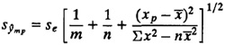
There are two special cases of this formula that are of interest. One case is for m = 1. This gives the standard deviation of a single future observation:
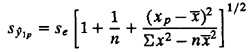
FIGURE 14.5 Confidence intervals for predictions from regression models.
The second case is for m = ∞. This gives the standard deviation of the mean of a large number of future observations at xp:
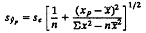
Notice that the standard deviation for the mean of an infinite future sample is lower than that of finite samples since in the latter case the error associated with the future observations should also be accounted for.
In all cases discussed above, a 100(1 – α)% confidence interval for the mean can be constructed using a t quantile read at n – 2 degrees of freedom.
It is interesting to note from the above expressions that the standard deviation of the prediction is minimal at the center of the measured range (at 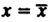) and it increases as we move away from the center. Since the goodness of any statistical prediction is indicated by its standard deviation, the goodness of the prediction decreases as we move away from the center. This is shown schematically in Figure 14.5. In particular, if we try to predict far beyond the measured range, the variance of the prediction will be large, the confidence interval will be wide, and the accuracy of the prediction will be low.
Example 14.5 Using the disk I/O and CPU time data of Example 14.1, let us estimate the CPU time for a program with 100 disk I/O’s.
In this case, we have already seen that the regression equation is
CPU time = –0.0083 + 0.2438(number of disk I/O’s)
Therefore, for a program with 100 disk I/O’s, the mean CPU time is
CPU time = –0.0083 + 0.2438(100) = 24.3674
Standard deviation of effors se = 1.0834
The standard deviation of the predicted mean of a large number of observations is
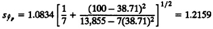
From Table A.4 in the Appendix, the 0.95-quantile of the t-variate with five degrees of freedom is 2.015.
90% confidence interval for predicted mean = 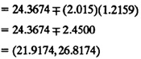
Thus, we can say with 90% confidence that the mean CPU time for a program making 100 disk I/O’s will be between 21.9 and 26.9 milliseconds. This prediction assumes that we will take a large number observations for such programs and then take a mean.
To set bounds on the CPU time of a single future program with 100 disk I/O’s, the computation is as follows:
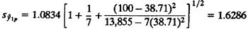
90% confidence interval for single prediction = 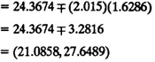
Notice that the confidence interval for the single prediction is wider than that for the mean of a large number of observations.
In deriving the expressions for regression parameters, we made the following assumptions:
If any of the assumptions are violated, the conclusions based on the regression model would be misleading. In this section, we describe a number of visual techniques to verify that these assumptions hold. Unlike statistical tests, all visual techniques are approximate. However, we have found them useful for two reasons. First, they are easier to explain to decision makers who may not understand statistical tests. Second, they often provide more information than a simple “pass-fail” type answer obtained from a test. Often, using a visual test, one can also find the cause of the problem.
The assumptions, which can be visually tested, and the corresponding tests are as follows:
)
FIGURE 14.6 Possible patterns of scatter diagrams.
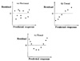
FIGURE 14.7 Possible patterns of residual versus predicted response graphs.
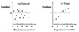
FIGURE 14.8 A trend in the residual versus experiment number may indicate side effects or incorrect initializations.
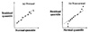
FIGURE 14.9 The normal quantile-quantile plots of the residuals should be a straight line.
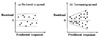
FIGURE 14.10 A trend in the spread of residuals as a function of the predicted response indicates a need for transformation or a nonlinear regression.
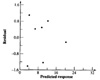
FIGURE 14.11 Graph of residual versus predicted response for the disk I/O and CPU time data.
| Previous | Table of Contents | Next |
){kind=link}
){kind=link}
){kind=link}
){kind=link}
){kind=link}
){kind=link}
){kind=link}
){kind=link}
){kind=link}
){kind=link}
){kind=link}
){kind=link}